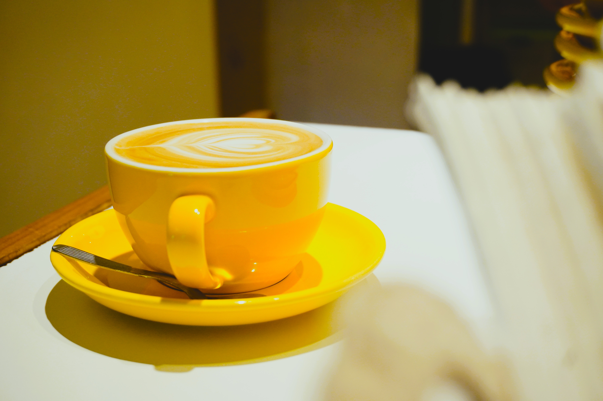

Nuestra historia
Cafetino es la primera cafetería de cafés especiales de General Pico, La Pampa. Nació con una idea simple pero poderosa: servir café especial.
Desde nuestra inauguración en 2018, en una fecha muy simbólica para los amantes del café —el 1° de octubre, Día Internacional del Café—, trabajamos con un mismo propósito: ofrecer una experiencia auténtica en cada taza.
Colaboramos con productores que cultivan y cosechan con dedicación, seleccionando granos de origen cuidadosamente elegidos. Cada café refleja el esfuerzo conjunto entre quienes lo siembran, lo tuestan y quienes lo servimos con pasión.
Nuestro espacio fue pensado para ser cálido, acogedor y lleno de detalles. En Cafetino, cada espresso, filtrado o latte es una invitación a disfrutar del momento, a conectar con los aromas, los sabores y la cultura del buen café.

Contamos con un equipo apasionado y comprometido, que comparte un mismo objetivo: elevar la cultura cafetera en La Pampa y hacer de cada visita una experiencia memorable.
Cafetino no es solo una cafetería: es un punto de encuentro, una comunidad y el reflejo de una dedicación constante por hacer las cosas bien, todos los días.
Después de siete años de trabajo y crecimiento, seguimos expandiendo esta pasión. Muy pronto abriremos nuestra segunda sucursal, un nuevo espacio para continuar compartiendo lo que más nos gusta:
El placer de servir café especial de verdad.
La historia detrás de cada taza
En Cafetino creemos que un café especial comienza mucho antes de llegar a la taza. Cada grano tiene una historia: conocemos su origen, la finca donde fue cultivado, el productor y su proceso de beneficio.
Seleccionamos cafés con trazabilidad completa, porque entendemos que la calidad no es casualidad, sino el resultado de la pasión, el conocimiento y el respeto por el café.
Esta trazabilidad garantiza que cada variedad mantenga su identidad y características únicas, ofreciendo una experiencia sensorial coherente, transparente y de calidad superior.
En Cafetino, creemos que la verdadera calidad se construye con dedicación y respeto en cada paso del camino.